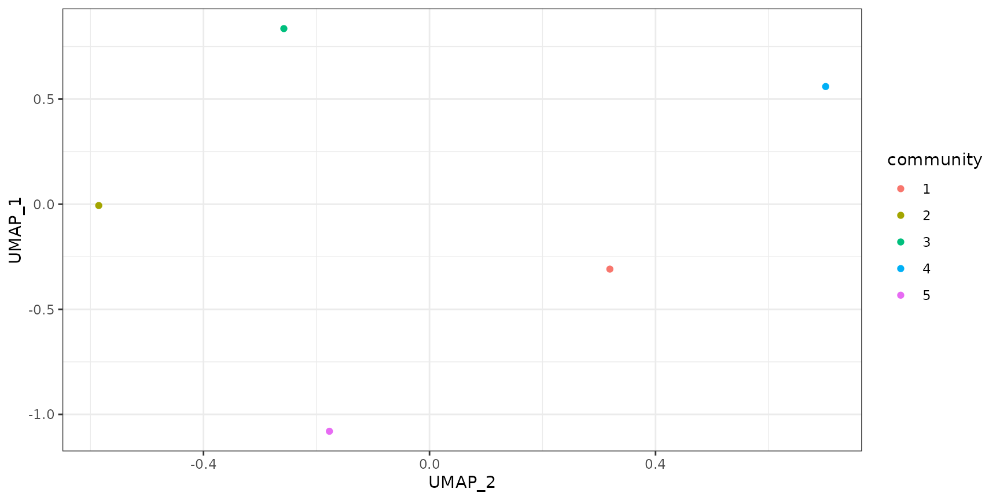

caseStudy2-NutrientThreshold-phyloseq
miaSim package authors
2023-05-29
Source:vignettes/phyloseq/caseStudy2-NutrientThreshold.Rmd
caseStudy2-NutrientThreshold.RmdIntroduction
This document provides the detailed code required to replicate case study 2 discussed in Gao et al. (2023). Methods in Ecology and Evolution. DOI: 10.1111/2041-210X.14129
This replication study has been implemented with phyloseq. The TreeSE package has been since then upgraded to use the TreeSE data container.
For general instructions and examples on using the miaSim package tools, see the vignette. miaSim implements tools for microbiome data simulation based on different ecological modeling assumptions. These can be used to simulate species abundance matrices, including time series. For a detailed function documentation, see the function reference page
Case study 2: Nutrient concentration threshold
The aim of this case study is to design and demonstrate the existence of nutrient concentration threshold which limits the beta-diversity of communities.
To fulfill this aim, we designed a gradient of environments, as well as a gradient of communities.
Setup
Load dependencies
library(ggplot2)
library(vegan)
library(reshape2)
library(umap)
library(miaSim)
library(philentropy)
library(ape)
library(cluster)(This batch of simulations is time-consuming. To reduce the calculation burden, we decreased the numbers of environments, resources, and communities from the original 10 to 5, and made other minor modifications.)
Set random seed
set.seed(42)Set initial shared parameters
n_species <- 5
n_resources <- 5
E <- randomE(n_species, n_resources, mean_consumption = 1, mean_production = 3)
growth_rates <- runif(n_species)
monod_constant <- matrix(rbeta(n_species*n_resources, 10,10),nrow=n_species, ncol=n_resources)
t_store <- 50
n.instances <- 1 # no stochastic process: no need to repeatDefine generating function. This function generates a data frame, where each row is arranged in an increasing dissimilarity to the first row.
gradient.df.generator <- function(n_row, n_col, density_row, max_gradient, error_interval){
list_initial <- list()
dissimilarity.gradient <- seq(from = 0, to = max_gradient, length.out = n_row)
for (i in seq_len(n_row)){
print(i)
if (i == 1){
row_temp <- rbeta(n_col, 1, 1/n_col)
col_to_remove <- sample(x = seq_len(n_col), size = n_col-n_col*density_row)
row_temp[col_to_remove] <- 0
list_initial[[i]] <- row_temp
} else {
while (length(list_initial) < i) {
row_temp <- rbeta(n_col, 1, 1/n_col)
col_to_remove <- sample(x = seq_len(n_col), size = n_col-n_col*density_row)
row_temp[col_to_remove] <- 0
diff_temp <- abs(vegdist(rbind(list_initial[[1]], row_temp), method = "bray") - dissimilarity.gradient[i])
if (diff_temp < error_interval) {
list_initial[[i]] <- row_temp
}
}
}
}
dataframe_to_return <- as.data.frame(t(matrix(unlist(list_initial), ncol = n_row)))
return(dataframe_to_return)
}Generate communities
n.community <- 5 # you can also try 20 or even 50.
density.community <- 0.8
set.seed(42)
community.initial.df <- gradient.df.generator(n_row = n.community, n_col = n_species, density_row = density.community, max_gradient = 0.7, error_interval = 0.1)## [1] 1
## [1] 2
## [1] 3
## [1] 4
## [1] 5
dist.community.initial.df <- vegdist(community.initial.df, method = "bray")Load plotting functions
makePlot <- function(out_matrix, title = "abundance of species by time", obj = "species", y.label = "x.t"){
df <- as.data.frame(out_matrix)
dft <- melt(df, id="time")
names(dft)[2] = obj
names(dft)[3] = y.label
lgd = ncol(df)<= 20
ggplot(dft, aes_string(names(dft)[1], names(dft)[3], col = names(dft)[2])) +
geom_line(show.legend = lgd, lwd=0.5) +
ggtitle(title) +
theme_linedraw() +
theme(plot.title = element_text(hjust = 0.5, size = 14))
}
makePlotRes <- function(out_matrix, title = "quantity of compounds by time"){
df <- as.data.frame(out_matrix)
dft <- melt(df, id="time")
names(dft)[2] = "resources"
names(dft)[3] = "S.t"
lgd = ncol(df)<= 20
ggplot(dft, aes(time, S.t, col = resources)) +
geom_line(show.legend = lgd, lwd=0.5) +
ggtitle(title) +
theme_linedraw() +
theme(plot.title = element_text(hjust = 0.5, size = 14))
}
makeHeatmap <-function(matrix.A,
title = "Consumption/production matrix",
y.label = 'resources',
x.label = 'species',
midpoint_color = NULL,
lowColor = "red",
midColor = "white",
highColor = "blue"){
df <- melt(t(matrix.A))
if (is.null(midpoint_color)) {
midpoint_color <- 0
}
names(df)<- c("x", "y", "strength")
df$y <- factor(df$y, levels=rev(unique(sort(df$y))))
fig <- ggplot(df, aes(x,y,fill=strength)) + geom_tile() + coord_equal() +
theme(axis.title = element_blank()) +
scale_fill_gradient2('strength', low = lowColor, mid = midColor, high = highColor, midpoint = midpoint_color)+
theme_void() + ggtitle(title)
if (ncol(matrix.A)<=10 & nrow(matrix.A)<=10){
fig <- fig + geom_text(aes(label = round(strength, 2)))
} else if (ncol(matrix.A)<=15 & nrow(matrix.A)<=15){
fig <- fig + geom_text(aes(label = round(strength, 1)))
} else {
fig <- fig
}
fig <- fig + labs(x = x.label, y = y.label)+
theme_linedraw() +
theme(plot.title = element_text(hjust = 0.5, size = 14), axis.text.x = element_text(
angle = 90))
if (nrow(matrix.A) >= 20){
# too many species
fig <- fig + theme(
axis.title.y=element_blank(),
axis.text.y=element_blank(),
axis.ticks.y=element_blank(),
)
}
if (ncol(matrix.A) >= 20){
# too many resources
fig <- fig + theme(
axis.title.x=element_blank(),
axis.text.x=element_blank(),
axis.ticks.x=element_blank()
)
}
fig
}
makeUMAP <- function(matrix, n_neighbors=10, min_dist=0.1, gradient=NULL, gradient_title = 'gradient', group=NULL, group2=NULL){
custom.config = umap.defaults
custom.config$n_neighbors = n_neighbors
custom.config$min_dist = min_dist
df <- as.data.frame(umap(matrix,config = custom.config)$layout)
df$gradient <- gradient
if (is.null(gradient)){
df$gradient <- 1
}
colnames(df) = c('UMAP_2', 'UMAP_1', gradient_title)
if (is.null(group)){
ggplot(df, aes_string('UMAP_2', 'UMAP_1', color=gradient_title)) +
geom_point() +
scale_color_gradient(low="blue", high="red")
} else {
if (is.null(group2)){
ggplot(df, aes_string('UMAP_2', 'UMAP_1', color=gradient_title)) +
geom_point(aes(color = group)) + theme_bw()
} else {
ggplot(df, aes_string('UMAP_2', 'UMAP_1', color=gradient_title)) +
geom_point(aes(color = group, shape = group2)) + theme_bw()
}
}
}
makeHeatmap(as.matrix(dist.community.initial.df),
title = "dissimilarity matrix",
x.label = "community.1",
y.label = "community.2")
makeUMAP(matrix = community.initial.df,
n_neighbors = 5,
group = factor(seq_len(n.community)),
gradient_title = "community")
Initialize shared parameters
crm_params <- list(
n_species = n_species,
n_resources = n_resources,
x0 = NULL,
E = E,
resources = rep(1,n_resources),
monod_constant = monod_constant,
migration_p = 0,
stochastic = FALSE,
t_start = 0,
t_end = 50,
t_step = 1,
t_store = t_store,
growth_rates = growth_rates,
norm=FALSE)Generate resource gradients
resourceConcentration <- 10^seq(0,4,1) # 1 to 10000
n.medium <- 5
density.medium <- 0.8
set.seed(42)
resource.initial.df <- gradient.df.generator(n_row = n.medium, n_col = n_resources, density_row = density.medium, max_gradient = 0.7, error_interval = 0.1)## [1] 1
## [1] 2
## [1] 3
## [1] 4
## [1] 5test one run
crmExample <- simulateConsumerResource(
n_species = n_species,
n_resources = n_resources,
E = E,
x0 = as.numeric(community.initial.df[1,]),
resources = as.numeric(resourceConcentration[3]*resource.initial.df[1,]),
growth_rates = growth_rates,
monod_constant = monod_constant,
stochastic = FALSE,
t_end = 50,
t_step = 1,
t_store = 50,
norm = FALSE)
makePlot(crmExample$matrix)
makePlotRes(crmExample$resources)Generate simulations and store the final community in community.simulation. In this step, the final relative abundance table is basisComposition_prop
set.seed(42)
library(miaSim)
community.simulation <- list()
counter_i <- 1
for (resConc in resourceConcentration) {
for (medium in seq_len(n.medium)){
crm_params$resources <- as.numeric(resource.initial.df[medium,]*resConc)
paramx0 <- as.list(as.data.frame(t(community.initial.df)))
crm_param_iter <- list(x0 = paramx0)
print(paste("resConc", resConc, "medium", medium))
crmMoments <- generateSimulations(model = "simulateConsumerResource",
params_list = crm_params,
param_iter = crm_param_iter,
n_instances = n.instances,
t_end = 50)
community.simulation[[counter_i]] <- as.data.frame(do.call(rbind, lapply(crmMoments, getCommunity)))
counter_i <- counter_i +1
}
}
basisComposition <- do.call(rbind.data.frame, community.simulation)
rm(counter_i, community.simulation)
basisComposition_prop <- basisComposition / rowSums(basisComposition)Visualization
Make UMAP plots.
In this step, plot result is stored in umap_CRM_gradient_plot, and this is visualized in different facets.
concentration <- as.factor(rep(resourceConcentration, each = n.medium*n.community))
medium <- as.factor(rep(seq_len(n.medium), each = n.community ,times = length(resourceConcentration) ))
community <- as.factor(rep(seq_len(n.community), times = length(resourceConcentration)*n.medium))
#plot the result in a UMAP space
makeUMAP(basisComposition, group = medium, group2 = concentration, gradient_title = 'Medium')
umap_CRM_gradient <- umap(basisComposition_prop)
# umap_CRM_gradient <- umap(basisComposition)
umap_CRM_coor <- as.data.frame(umap_CRM_gradient$layout)
colnames(umap_CRM_coor) <- c("UMAP_1", "UMAP_2")
umap_CRM_coor <- cbind(umap_CRM_coor, concentration, medium, community)
umap_CRM_gradient_plot <- ggplot(umap_CRM_coor,
aes(UMAP_1, UMAP_2,
# alpha = concentration,
color = medium,
shape = community)) +
geom_point() +
# scale_shape_manual(values = c(0, 1, 2, 5, 6, 8, 15, 16, 17, 18)) +
scale_shape_manual(values = seq(0, n.community -1 ,1)) +
scale_alpha_manual(values = seq(0.25, 1, 0.75/(length(resourceConcentration)-1))) +
theme_bw()In this part, different visualization of results demonstrate (in various facets) the gradual change of communities’ beta diversity. The first figure indicates that the initial community composition is more important than the combinations of initial available resources.
The first sub-figure in the second figure demonstrates that in an oligotrophic (less available nutrients) environment, communities won’t change much in a given time, whilst the last two sub-figures resemble each other, implying that the nutrient is no longer the limiting factor of the beta-diversity of the community. This pattern is further displayed in the following “curve plot”.
In the third figure, the second and the fourth community always stays more similar, despite their initial dissimilarity, indicating that they might belong to one community type. This can be validated by input 20 or even 50 as n.community in this case study: communities turns into clusters in each sub-figures.
print(umap_CRM_gradient_plot)
print(umap_CRM_gradient_plot + facet_grid(concentration ~ ., labeller = label_both))
print(umap_CRM_gradient_plot + facet_grid(medium ~ concentration, labeller = label_both))
print(umap_CRM_gradient_plot + facet_grid(community ~ concentration, labeller = label_both))
print(umap_CRM_gradient_plot + facet_grid(community ~ medium, labeller = label_both))“Saturation curve” of average beta-diversity between communities with community 1
In this part, we’d like to demonstrate that the average distance from other communities to community 1 will reach to a threshold of nutrients, after which the average distance won’t increase along with the total concentration of nutrients.
To do so, we first define a function calculating the mean distance to the first community.
Construct a function taking umap_CRM_coor as df and return the mean distance
average_distance <- function(df, res_conc_type, com_type, method = "euclidean"){
sub_df <- df[df$concentration == res_conc_type & df$community == com_type,]
combines <- combn(sub_df$medium, 2)
distances <- NULL
for (i in seq_len(ncol(combines))) {
distances[i] <- dist(sub_df[combines[,i], c(1, 2)])
}
# print(distances)
return(mean(distances))
}
# average_distance(umap_CRM_coor, 1, 2)Constructing dataframe to save results
distance_saturation_data <- data.frame(concentration = integer(),
community = integer(),
average_distance = numeric())
for (res_conc_type in unique(umap_CRM_coor$concentration)){
for (com_type in unique(umap_CRM_coor$community)){
ave_dist <- average_distance(umap_CRM_coor, res_conc_type, com_type)
distance_saturation_data[nrow(distance_saturation_data)+1,] <-
c(res_conc_type, com_type, ave_dist)
}
}
# View(distance_saturation_data)
distance_saturation_data$average_distance <- as.numeric(distance_saturation_data$average_distance)
distance_saturation_data$concentration <- as.factor(distance_saturation_data$concentration)
distance_saturation_data$community <- as.factor(distance_saturation_data$community)
distance_saturation_data_plot <- ggplot(distance_saturation_data,
aes(concentration, average_distance,
color = community,
group = community)) +
geom_line() + geom_point() +
scale_shape_manual(values = c(0, 1, 2, 5, 6, 8, 15, 16, 17, 18)) +
labs(x = "resource concentration", y = "average distance between communities in UMAP") +
theme_bw()Visualize the distance plot
print(distance_saturation_data_plot)
# ggsave(paste0("CRMgradient_distance_curve_mod.pdf"), plot = distance_saturation_data_plot , dpi = 300, width = 12, height = 10, units = "cm", scale = 2)